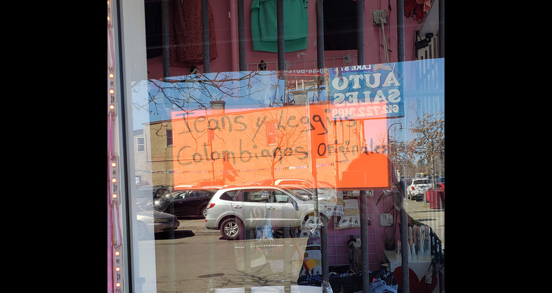
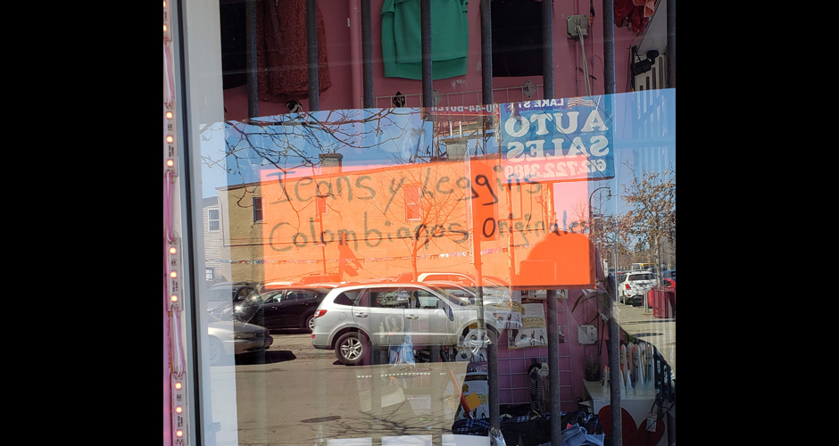

Linguistic Landscapes in Minneapolis, MN
What are Linguistic Landscapes?
A Linguistic Landscape is the visibility and prominence of languages in signs in public places within a multilingual area. Even though many people in the United States believe that English is the official language of the United States, there are more than 381 minority languages spoken here. In many cities, such as Minneapolis-St. Paul, we see a lot of multilingual contact, especially in neighborhoods that are historically where there is a lot of immigration, like West St. Paul and Lake Street. I investigated this type of language contact in order to see if there was a relation between the Spanish-speaking population that like in certain areas and the languages that exist in commercial, public, and private signs.
¿Qué son los paisajes lingüísticos?
Un Paisaje Lingüístico es la visibilidad y prominencia de los idiomas en los letreros públicos y comerciales en un territorio multilingüe. Aunque mucha gente estadounidense cree que la lengua oficial de los Estados Unidos es el inglés, hay más que 381 lenguas minoritarias habladas acá. En muchas ciudades, como Minneapolis-St. Paul, vemos mucho contacto multilingüe, especialmente en los barrios que tienen historia inmigrante, como en West St. Paul y Lake Street. Entonces, yo investigue ese tipo de contacto de lengua para ver si había una relación entre la población de hispanohablantes que viven en ciertas zonas y las lenguas que existen en letreros comerciales, públicos, y privados.
My Investigation
In order to investigate this, I began by looking at the history of the use of Spanish in various communities in the Twin Cities. In general, Minnesota does not have a very large population of Spanish-speakers in comparison to other states in the USA, like Texas, California, New Mexico, and New York, but recently there has been an increase in migration to states in the Mid-Atlantic and Midwest. Because these populations are relatively new and growing, there haven't been many studies on the linguistic landscape of these areas. Currently, there are 276,000 latinos in Minnesota, which is about 5% of the entire population. The majority are of Mexican heritage, and more than half speak Spanish at home instead of or in conjunction with English.
Mi investigación
Para investigarlo, empecé con la historia del uso de español en varias comunidades en las ciudades gemelas. En general, Minnesota no tiene un gran población de los hispanohablantes en comparación a otros estados en los EEUU, como Texas, California, Nueva México, y Nueva York, pero ya está aumentado con mucha más migración a los estados de medio-atlántico y medio-oeste. Porque estas poblaciones son relativamente nuevas, no había muchos estudios sobre el paisaje lingüístico de estas regiones de los EEUU. Ahora, hay 276.000 de latinos en Minnesota y consisten en 5% de la población entero. La mayoría son de origen mexicano y más de un mitad se hablan el Español en casa en vez de o conjuntos con Inglés.
Lake Street as an Immigrant Neighborhood
I chose to investigate the linguistic landscape of Lake Street in Minneapolis. This street and the surrounding neighborhoods historically are areas that have always had large immigrant populations in Minnesota. During the 19th century, many Scandinavian immigrants settled there, and Lake Street became a commercial hub. In 1881, the Chicago, Milwaukee, St. Paul, and Pacific Railroads brought industry, manufacturing, and goods to Lake Street. About 100 years later, Lake Street wasn’t as prosperous of an area. In fact, it was very dilapidated with a lot of crime, prostitution, and abandoned buildings. The new wave of immigrants that settled there, mostly from México, revitalized it. Today, it still it is an area that many immigrants call home, full of diversity, commerce, and many businesses that are run by immigrants from Latin America and East Africa.
Lake Street como un barrio de inmigrantes
Decidí investigar el paisaje lingüístico de Lake Street en Minneapolis. Este calle y los barrios alrededor históricamente son zonas donde siempre había muchos inmigrantes en los EEUU. En el siglo XIX, muchos inmigrantes escandinavos se establecieron allí y Lake Street se convirtió en un centro de actividad comercial. En 1881, el ferrocarril (railroad) de Chicago, Milwaukee, St. Paul y Pacific llegaron industria, fabricación y los bienes a Lake Street. Casi cien años después, Lake Street no era una zona tan exitoso, de hecho, era muy ruinosa con mucho crimen, la prostitución, y muchos edificios abandonados. La nueva ola de inmigrantes, la mayoría de México, la revitalizo. Hoy en día, hoy en día, sigue siendo una zona inmigrantes, diversidad, y comercial y muchos negocios están dirigidos por inmigrantes de latinoamérica y África oriental.
Demographics of Lake Street
Lake Street functions as a border between two neighborhoods in the south of Minneapolis with considerable Spanish-Speaking populations. Philips is to the north of the street and has a population of 22,433 people with 29% latino and 40.2% immigrant. Powderhown is to the south and has a larger population of 58,154 people with 23% latino and 22.7% immigrant.
Datos demográficos de Lake Street
Lake Street funciona como frontera entre dos barrios con poblaciones considerables de hispanohablantes. Philips está al norte de la calle y tiene una población de 22,433 gente con el 29% latino y el 40.2% inmigrante. Powderhorn está al sur y tiene una población más grande de 58,154 gente con el 23% latino y el 22.7% inmigrante
Methodology of the Study
We began by taking photos of the signs on Lake Street. We took 192 photos of signs from Cedar Avenue to S 15th Ave on both sides of the street. You can see the photos below. It is important to note that we only photographed signs one time although many occurred in many storefronts or in the street. We didn't take into account in our data repeated signs in any language or street signs. (E.g. Street signs, stop signs, etc)
Metodología del estudio
Empecemos por tomar fotos de los letreros en Lake Street. Tomamos 192 fotos de los letreros desde Cedar Ave a S 15th Ave, en los dos lados de la calle. Puede verlas abajo. Es importante notar que sólo fotografiamos los letreros una vez aunque muchos ocurrieron en muchas fachadas de las tiendas o en la calle. Entonces, no tomamos en cuenta en nuestros datos los letreros repetidos de cualquier lengua ni los letreros de calle (como los nombres de calles, señales de parada, etc.).
Analysis of Photos/Signs
We categorized the photos by type of sign (public, private, commercial), business type (food, doctors, salon, technology), the language present (English, Spanish, other, bilingual), and the use of standard language or not. If the signs were bilingual, we also categorized them by language balance (dominant in English, dominant in Spanish, equal), font size of the languages, and translation (word for word, partial translation, or no translation). We compared our results with the demographics of the surrounding neighborhoods to see the relationships.
Analisis de las fotos/letreros
Las categorizamos por tipo de letrero (público, privado, comercial), tipo de negocio (ej: comida, médicos, tecnología, peluquería, etc.), la lengua presenta (inglés, español, otra, o bilingüe) y el uso de lengua estándar o no. Si los letreros sean bilingües, también los categorizamos por el equilibrio de las lenguas (dominante en inglés, dominante en español, igual), tamaño de la fuente de las dos lenguas y la traducción (palabra por palabra, parcial, no existe). Comparamos nuestros resultados con los datos demográficos de los barrios alrededor de la calle para ver las relaciones.

 

Results
We found many examples of signs with multiple languages on Lake Street, or at least the blocks we investigated. The data we collected showed the linguistic landscape of Lake Street: of the signs we photographed, 47.9% were monolingual English, 27.1% were monolingual Spanish, 21.9% were English/Spanish bilingual, 2.1% were other bilingual, and 1% were monolingual other. In comparison with the language composition of the neighborhoods, Philips is 47.1% English and 53.8% other languages and in Powderhorn, it is 68% English and 32% other. The percentage of monolingual English signs was very similar to the ratio in Philips but less indicative of English usage in Powderhorn.
Resultados
Encontramos muchos ejemplos de letreros en lenguas múltiples por todo Lake Street, o por lo menos en los cuadros investigamos. Los datos que coleccionamos mostraron el paisaje lingüístico de Lake Street. De los letreros lo que fotografiamos, el 47.9% eran monolingüe del inglés, el 27.1% monolingüe del español, el 21.9% bilingüe del inglés-español, el 2.1% bilingüe de otra, y el 1% monolingüe de otra. En comparación de las composiciones de lenguas en los barrios, en Philips es el 41.7% inglés y el 58.3% lenguas otras que el inglés y en Powderhorn es el 68.0% inglés y el 32.0% LOQI. Entonces, el porcentaje de letreros monolingües del inglés fue muy similar de la tasa en Philips pero menos indicativo del uso de inglés en Powderhorn.
Results by Sign Type
We found more use of English in top-down (governmental) signs, like we expected from previous studies. 52% of of the signs were only in English, 20% were Spanish only, 24% were English/Spanish bilingual, and only about 4% were used other languages, monolingual or bilingual. Of the commercial signs, less than half (48%) were monolingual English with a quarter bilingual (22%) and another quarter monolingual Spanish (28%).
Resultados por tipos de letreros
Encontramos más uso del inglés en letreros de arriba hacia abajo, comos vemos en estudios anteriores. El 52% de los letreros son solamente en inglés, el 20% de sólo español, el 24% del bilingües inglés y el español, y sólo casi el 4% de otras lenguas, monolingües o bilingües. De los letreros comerciales, menos de una mitad (48%) eran monolingüe del inglés con un cuarto bilingüe (22%) y el otro cuarto sólo del español (28%).
Results by Business Type
Because Lake Street has many locally-owned businesses, we also wanted to consider the diferences in the use of languages between local stores and chains. Only 24% of the businesses were chains and the rest were local (or unknown). The signs on local businesses had less English use (45%) and more other language use (54%) than businesses that were chains. Chains used monolingual English in their signs 52% of the time. Howeever, the majority of all business types, chain or local, used English compared to other minority languages.
Resultados por tipos de negocio
Porque Lake Street tiene muchas empresas de propiedad local, también queríamos considerar las diferencias en el uso de idiomas entre las tiendas locales y cadenas. Solo el 24% de los negocios eran cadenas y el resto eran locales (o desconocidos). Los letreros de negocios locales tenían menos uso de inglés (45%) y más de LOQI o bilingüe (54%) que los negocios cadenas con un uso del inglés del 52%. Sin embargo, la mayoría de letreros de negocios locales y cadenas eran en inglés.
Results of Phenomenons of Language Contact
We found some examples of phenomenons of language contact through the signs on Lake Street. The majority were examples of code-switching and linguistic borrowing of words, like the use of "leggins" in Spanish to refer to the English word "leggings", which is a relatively new concept, and it is unlikely that there is a word in Spanish for this concept. The other types of language contact didn't appear as much, probably due to the fact that many of the Spanish speakers are immigrants, and they use referential dialects with more standard language than generations 2 and 3.
Resultados de fenómenos del contacto de lenguas
Encontramos algunos ejemplos los fenómenos del contacto de lenguas a través de los letreros. La mayoría era los cambios de código y préstamos lingüísticos, como el uso de “leggins” para referir a la palabra de “leggings” en inglés, un concepto relativamente nuevo y es improbable que exista una palabra en español para el concepto. Los otros tipos de contacto no aparecen tanto probablemente debido a muchos de los hispanohablantes son inmigrantes y usan dialectos referenciales con más lengua estándar que las generaciones 2 y 3.
Conclusions
The results of our study show that the language present in the signs on Lake Street reflect the demographics of Philips and Powderhorn well. The use of languages other than English in the signs is between the percent usage of languages other than English in both populations, which makes sense. Due to the history of immigration and multilingualism of Lake Street, it is an area more open to linguistic diversity. As a result, there is a lot of pride that Lake Street has for being a multicultural area. We believed that Lake Street utilized linguistic and ethnic diversity to build upon their identity as an unique neighborhood in Minneapolis while also allowing immigrants and other diverse ethnic groups maintain their traditions, language, etc. and share them.
Conclusiones
Los resultados de nuestro estudio muestran que la lengua presenta en los letreros en Lake Street refleja bien los datos demográficos de los barrios de Philips y Powderhorn. El uso de LOQI en los letreros está en el medio entre el porcentaje del uso de LOQI por ambas poblaciones, lo que tiene sentido. Debido a la historia de inmigración y multilingüismo de Lake Street, es una zona más abierta de diversidad lingüística. Como resulta de la historia de Lake Street, hay mucho orgullo de ser una zona multicultural. Creemos que Lake Street utilizan la diversidad lingüística y étnica para basarse en su identidad única como barrio en Minneapolis y mientras que permite a los inmigrantes y diversos grupos de ética para mantener sus tradiciones, idioma, etc. y compartirlos.
Something interesting that we found that surprised us was that the majority of the signs were not bilingual, but nearly half of the storefronts had signs in multiple languages and sometimes without translations. This led us to believe that the owners of the stores understand that it is a bilingual community, but there is still a certain separation within the languages on the signs. We found that many business with multilingual signs used only English or bilingual translations on signs potentially could exclude costumers if their signs were in minority languages, like "open" signs or hours of business, while signs that promoted cultural events meant for members of the community tended to be monolingual in the minority language or bilingual without translations, showing there does appear to be some instances ingrouping/outgrouping that is shown through language usage in signs.
Algo interesante que encontramos que nos sorprendió era aunque la mayoría de los letreros no eran bilingües, casi una mitad de las fachadas de las tiendas tienen letreros en varias lenguas y a veces sin traducciones. Esto nos llevó a creer que los dueños de las tiendas entienden que es una comunidad bilingüe, pero todavía hay cierta separación dentro de los letreros. Encontramos que muchos negocios con letreros multilingües utilicen sólo el inglés o traducciones bilingües en letreros que potencialmente podría excluir a los clientes de su empresa si fueran en la lengua minoritaria, como letreros de “estamos abiertos” u horarios comerciales, sino de letreros que promueven eventos culturales significó para la gente de la comunidad, tienden a ser monolingües de la lengua minoritaria o bilingües, sin traducción. Lo muestran can hay algunos casos de endogrupos/ exogrupos en el uso de lenguas en los letreros.
For the Future
It is very important to continue studies of linguistic landscapes in the future. It is difficult to compare our conclusions and hypotheses with those of other areas because there isn't enough information. It is important that we keep studying smaller, growing, and isolated areas, like Lake Street and Charlotte, NC, because they are the linguistic landscapes that are changing the quickest in the United States. Therefore, they could have many implications for the vitality of minority languages in the USA. At this point in time, we can't say if other areas in the United States support our conclusions, but it is evident that the number of signs that use languages other than English and good attitudes support this use of Spanish and that it does have a critical role in the linguistic landscape of Lake Street.
Para el futuro
Tiene tanta importancia de continuar los estudios de paisajes lingüísticos en el futuro. Es tan difícil de comparar nuestros conclusiones e hipótesis con otras zonas porque no hay tanta información. Es importante que sigamos estudiando zonas más pequeñas, crecidas y aisladas, como Lake Street y Charlotte, porque son los paisajes lingüísticos que cambian más rápidamente en los Estados Unidos. Por lo tanto, podrían tener muchas implicaciones para la vitalidad de las lenguas minoritarias en los Estados Unidos. En este momento, no podemos decir si otras zonas en los EEUU apoyan nuestros conclusiones, pero es evidente en el número de letreros que usan LOQI y las actitudes buenas que apoyan este uso que el español si tiene un papel crítico en el paisaje lingüístico de Lake Street.
References/Referencias
de Anda, R. G., & Mazzaro, N. (2017). “Koma más poyo. Chick-fil-A”: the linguistic landscape of El Paso, Texas [PowerPoint slides].
Franco Rodríguez, José M. (2008). El paisaje lingüístico del Condado de Los Ángeles y del Condado Miami-Dade: Propuesta metodológica. Círculo De Lingüística Aplicada a La Comunicación, (35), Círculo de lingüística aplicada a la comunicación, 2008, Issue 35.
Gorter, D., Cenoz, J., & Hornberger, N. (2008). Knowledge about Language and Linguistic Landscape. In Encyclopedia of Language and Education (pp. 2090-2102). Boston, MA: Springer US.
Lyons, K., & Rodríguez-Ordóñez, I. (2017). Quantifying the Linguistic Landscape: A Study of Spanish-English Variation in Pilsen, Chicago. Spanish in Context, 14(3), 329-362.
My Lake Street. (n.d.). Retrieved February 26, 2019, from http://visitlakestreet.com/visitors-guide/my-lake-street.
Neighborhood data & trends for Minneapolis-Saint Paul. (n.d.). Retrieved February 26, 2019, from https://www.mncompass.org/profiles/neighborhoods/minneapolis-saint-paul#!community-areas
Roeder, & Walden. (2016). The changing face of dixie: Spanish in the linguistic landscape of an emergent immigrant community in the New South. Ampersand, 3, 126-136.